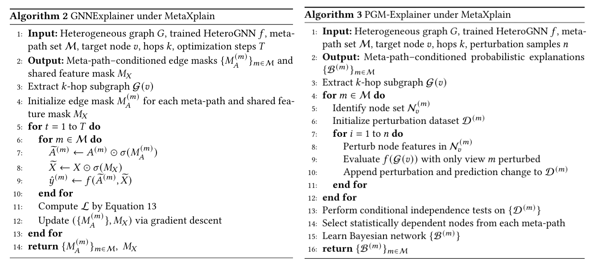

Meta-path-based heterogeneous graph neural networks aggregate over meta-path-induced views, and their semantic-level attention over meta-path channels is widely used as a narrative for ``which semantics matter.'' We study this assumption empirically by asking: when does meta-path attention reflect meta-path importance, and when can it decouple? A key challenge is that most post-hoc GNN explainers are designed for homogeneous graphs, and naive adaptations to heterogeneous neighborhoods can mix semantics and confound perturbations. To enable a controlled empirical analysis, we introduce MetaXplain, a meta-path-aware post-hoc explanation protocol that applies existing explainers in the native meta-path view domain via (i) view-factorized explanations, (ii) schema-valid channel-wise perturbations, and (iii) fusion-aware attribution, without modifying the underlying predictor. We benchmark representative gradient-, perturbation-, and Shapley-style explainers on ACM, DBLP, and IMDB with HAN and HAN-GCN, comparing against xPath and type-matched random baselines under standard faithfulness metrics. To quantify attention reliability, we propose Meta-Path Attention--Explanation Alignment (MP-AEA), which measures rank correlation between learned attention weights and explanation-derived meta-path contribution scores across random runs. Our results show that meta-path-aware explanations typically outperform random controls, while MP-AEA reveals both high-alignment and statistically significant decoupling regimes depending on the dataset and backbone; moreover, retraining on explanation-induced subgraphs often preserves, and in some noisy regimes improves, predictive performance, suggesting an explanation-as-denoising effect.

Figure 1. Overview of the MetaXplain protocol (eg. for the GNNExplainer and PGM-Explainer) for meta-path-aware post-hoc explanations. (a) We apply existing explainers in the native meta-path view domain via view-factorized explanations, schema-valid channel-wise perturbations, and fusion-aware attribution, without modifying the underlying predictor. (b) To quantify attention reliability, we propose Meta-Path Attention--Explanation Alignment (MP-AEA), which measures rank correlation between learned attention weights and explanation-derived meta-path contribution scores across random runs.
This work was supported by the Department of Computer science at the, William and Mary, Virginia, USA. The author sincerely acknowledges the guidance and mentorship of Dr. Yanfu Zhang, whose expertise, continuous support, and insightful discussions were instrumental in shaping this research. His valuable feedback significantly contributed to the development and evaluation of the proposed framework.